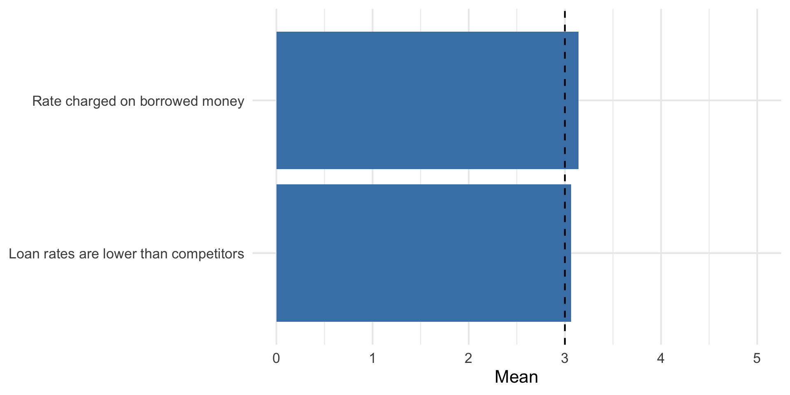
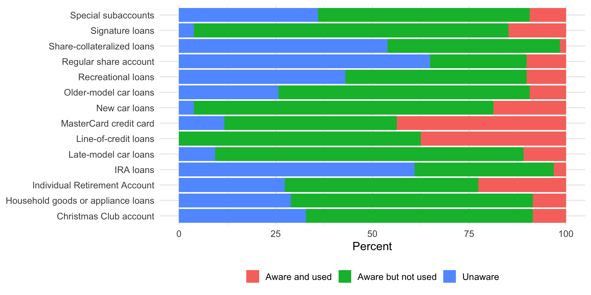

One Sample t-test
data: efcu$Q7_r
t = 1.3016, df = 117, p-value = 0.1956
alternative hypothesis: true mean is not equal to 3
95 percent confidence interval:
2.964639 3.170954
sample estimates:
mean of x
3.067797 | n | Mean | SD |
|---|---|---|
| 118 | 3.07 | 0.57 |
Analysis of R1 R2 R5 and R6
For this assignment, I analyzed the following research questions:
The cleaned data file has 128 members. I started by looking at the frequencies and averages. After that, I used one-sample t tests for the scale questions and chi-square tests for the yes/no questions. For the one-sample t tests, I used 3 as the comparison value.
The analysis table uses Q7 for R1. Q7 asks members what they think about the rate paid on their share or savings account. The reversed variable goes from 1 = very low to 5 = very high.
One Sample t-test
data: efcu$Q7_r
t = 1.3016, df = 117, p-value = 0.1956
alternative hypothesis: true mean is not equal to 3
95 percent confidence interval:
2.964639 3.170954
sample estimates:
mean of x
3.067797 | n | Mean | SD |
|---|---|---|
| 118 | 3.07 | 0.57 |
The average rating was 3.07, which is very close to 3, or average. The one-sample t test was not significant, t(117) = 1.3, p = 0.196.
This means members did not rate the share account rate as especially high or low. Based on Q7, the rate does not seem to be a major reason that makes the Credit Union stand out. However, Q7 does not directly ask members why they joined, so it only gives part of the answer to R1.
For R2, I used Q8r and Q30. Q8r measures what members think about the rates charged on borrowed money. Q30 asks whether they agree that the Credit Union has lower loan rates than other financial institutions.
r2_summary <- bind_rows(
tibble(Item = "Rate charged on borrowed money", n = sum(!is.na(efcu$Q8_r)),
Mean = mean(efcu$Q8_r, na.rm = TRUE), SD = sd(efcu$Q8_r, na.rm = TRUE)),
tibble(Item = "Loan rates are lower than competitors", n = sum(!is.na(efcu$q30)),
Mean = mean(efcu$q30, na.rm = TRUE), SD = sd(efcu$q30, na.rm = TRUE))
)
kable(r2_summary, digits = 2)
r2_q8_test <- t.test(efcu$Q8_r, mu = 3)
r2_q30_test <- t.test(efcu$q30, mu = 3)
r2_q8_test
One Sample t-test
data: efcu$Q8_r
t = 1.9132, df = 106, p-value = 0.05842
alternative hypothesis: true mean is not equal to 3
95 percent confidence interval:
2.994913 3.285461
sample estimates:
mean of x
3.140187
One Sample t-test
data: efcu$q30
t = 0.81543, df = 127, p-value = 0.4164
alternative hypothesis: true mean is not equal to 3
95 percent confidence interval:
2.91083 3.21417
sample estimates:
mean of x
3.0625 | Item | n | Mean | SD |
|---|---|---|---|
| Rate charged on borrowed money | 107 | 3.14 | 0.76 |
| Loan rates are lower than competitors | 128 | 3.06 | 0.87 |
The average for Q8r was 3.14. This was slightly above 3, but the result was not significant, t(106) = 1.91, p = 0.058.
The average for Q30 was 3.06. This result was also not significant, t(127) = 0.82, p = 0.416.
Overall, members did not clearly believe that EFCU had better loan rates than other financial institutions. This could be one reason they borrow money somewhere else. The survey questions used here do not cover every possible reason, so things like convenience or loan options could also matter.

Figure 1: Average ratings for the two R2 items
For R5, I looked at Q13 through Q26. Each question shows whether the member used the service, knew about it but did not use it, or did not know about it.
| Service | Aware and used | Aware but not used | Unaware |
|---|---|---|---|
| Christmas Club account | 11 (8.6%) | 75 (58.6%) | 42 (32.8%) |
| Household goods or appliance loans | 11 (8.6%) | 80 (62.5%) | 37 (28.9%) |
| IRA loans | 4 (3.1%) | 46 (35.9%) | 78 (60.9%) |
| Individual Retirement Account | 29 (22.7%) | 64 (50%) | 35 (27.3%) |
| Late-model car loans | 14 (10.9%) | 102 (79.7%) | 12 (9.4%) |
| Line-of-credit loans | 48 (37.5%) | 80 (62.5%) | NA |
| MasterCard credit card | 56 (43.8%) | 57 (44.5%) | 15 (11.7%) |
| New car loans | 24 (18.8%) | 99 (77.3%) | 5 (3.9%) |
| Older-model car loans | 12 (9.4%) | 83 (64.8%) | 33 (25.8%) |
| Recreational loans | 13 (10.2%) | 60 (46.9%) | 55 (43%) |
| Regular share account | 13 (10.2%) | 32 (25%) | 83 (64.8%) |
| Share-collateralized loans | 2 (1.6%) | 57 (44.5%) | 69 (53.9%) |
| Signature loans | 19 (14.8%) | 104 (81.2%) | 5 (3.9%) |
| Special subaccounts | 12 (9.4%) | 70 (54.7%) | 46 (35.9%) |

Figure 2: Awareness and use of EFCU services
The regular share account was the most-used service at 64.8%. MasterCard was used by 43.8%, and line-of-credit loans were used by 37.5%.
Some services had much lower awareness. 60.9% of members were unaware of IRA loans, 53.9% were unaware of share-collateralized loans, and 43.0% were unaware of recreational loans.
The results show that members knew more about the basic services than the specialized loan services. EFCU could do a better job explaining the less familiar services to its members.
For R6, I looked at statement frequency, statement accuracy, confidentiality, loan processing, whether services meet member needs, loan application simplicity, and the overall rating of EFCU management.
r6_summary <- bind_rows(
tibble(Item = "Statement frequency", n = sum(!is.na(efcu$q9_r)), Mean = mean(efcu$q9_r, na.rm = TRUE), SD = sd(efcu$q9_r, na.rm = TRUE)),
tibble(Item = "Statement accuracy", n = sum(!is.na(efcu$q10_r)), Mean = mean(efcu$q10_r, na.rm = TRUE), SD = sd(efcu$q10_r, na.rm = TRUE)),
tibble(Item = "Personnel keep information confidential", n = sum(!is.na(efcu$q31)), Mean = mean(efcu$q31, na.rm = TRUE), SD = sd(efcu$q31, na.rm = TRUE)),
tibble(Item = "Prompt loan processing", n = sum(!is.na(efcu$q32)), Mean = mean(efcu$q32, na.rm = TRUE), SD = sd(efcu$q32, na.rm = TRUE)),
tibble(Item = "Services meet member needs", n = sum(!is.na(efcu$q33)), Mean = mean(efcu$q33, na.rm = TRUE), SD = sd(efcu$q33, na.rm = TRUE)),
tibble(Item = "Loan applications are simple", n = sum(!is.na(efcu$q34)), Mean = mean(efcu$q34, na.rm = TRUE), SD = sd(efcu$q34, na.rm = TRUE)),
tibble(Item = "Overall management and operation", n = sum(!is.na(efcu$Q37_r)), Mean = mean(efcu$Q37_r, na.rm = TRUE), SD = sd(efcu$Q37_r, na.rm = TRUE))
)
kable(r6_summary, digits = 2)| Item | n | Mean | SD |
|---|---|---|---|
| Statement frequency | 128 | 2.77 | 0.42 |
| Statement accuracy | 128 | 3.47 | 0.64 |
| Personnel keep information confidential | 128 | 3.95 | 0.68 |
| Prompt loan processing | 128 | 3.72 | 0.79 |
| Services meet member needs | 128 | 3.59 | 0.68 |
| Loan applications are simple | 128 | 3.46 | 0.78 |
| Overall management and operation | 121 | 4.07 | 0.73 |
One Sample t-test
data: efcu$q9_r
t = -6.0993, df = 127, p-value = 1.191e-08
alternative hypothesis: true mean is not equal to 3
95 percent confidence interval:
2.699934 2.846941
sample estimates:
mean of x
2.773438
One Sample t-test
data: efcu$q10_r
t = 8.2979, df = 127, p-value = 1.33e-13
alternative hypothesis: true mean is not equal to 3
95 percent confidence interval:
3.356966 3.580534
sample estimates:
mean of x
3.46875
One Sample t-test
data: efcu$q31
t = 15.742, df = 127, p-value < 2.2e-16
alternative hypothesis: true mean is not equal to 3
95 percent confidence interval:
3.826486 4.064139
sample estimates:
mean of x
3.945312
One Sample t-test
data: efcu$q32
t = 10.254, df = 127, p-value < 2.2e-16
alternative hypothesis: true mean is not equal to 3
95 percent confidence interval:
3.580041 3.857459
sample estimates:
mean of x
3.71875
One Sample t-test
data: efcu$q33
t = 9.8661, df = 127, p-value < 2.2e-16
alternative hypothesis: true mean is not equal to 3
95 percent confidence interval:
3.474663 3.712837
sample estimates:
mean of x
3.59375
One Sample t-test
data: efcu$q34
t = 6.6626, df = 127, p-value = 7.357e-10
alternative hypothesis: true mean is not equal to 3
95 percent confidence interval:
3.324038 3.597837
sample estimates:
mean of x
3.460938
One Sample t-test
data: efcu$Q37_r
t = 16.125, df = 120, p-value < 2.2e-16
alternative hypothesis: true mean is not equal to 3
95 percent confidence interval:
3.935211 4.197020
sample estimates:
mean of x
4.066116 q11_table <- table(efcu$q11)
q12_table <- table(efcu$q12rc)
r6_yes_no <- tibble(
Item = c("Statements are easy to understand", "Account information is confidential"),
Yes = c(q11_table["1"], q12_table["1"]),
No = c(q11_table["2"], q12_table["2"]),
`Yes Percent` = c(100 * q11_table["1"] / sum(q11_table),
100 * q12_table["1"] / sum(q12_table))
)
kable(r6_yes_no, digits = 1)
chisq.test(q11_table, p = c(.5, .5))
Chi-squared test for given probabilities
data: q11_table
X-squared = 116.28, df = 1, p-value < 2.2e-16
Chi-squared test for given probabilities
data: q12_table
X-squared = 16.642, df = 1, p-value = 4.515e-05| Item | Yes | No | Yes Percent |
|---|---|---|---|
| Statements are easy to understand | 125 | 3 | 97.7 |
| Account information is confidential | 74 | 32 | 69.8 |
Most of the operational ratings were above 3 and statistically significant. The highest average was the overall rating of management and operation (M = 4.07). Members also gave strong ratings for confidentiality (M = 3.95), prompt loan processing (M = 3.72), and whether services met their needs (M = 3.59).
For the yes/no questions, 97.7% said their statements were easy to understand. Also, 69.8% said the Credit Union kept their account information confidential. Both chi-square tests were significant.
Overall, the members had a positive opinion of how EFCU was operated. Statement frequency was below 3, but 3 means “about right” for this question, so I would not treat that result the same way as the other rating questions.
For R1, members rated the share account rate as average. For R2, they did not clearly see EFCU loan rates as better than the competition. For R5, members were aware of the main services, but many did not know about some of the specialized loans. For R6, members generally had a positive opinion of how the Credit Union was operated.
The main thing I took from the results is that EFCU seems to be doing well operationally, but it could do a better job showing members the value of its rates and explaining services that are not as well known.